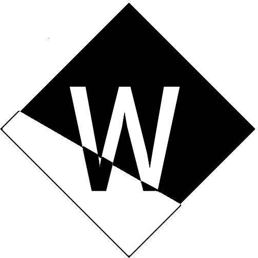
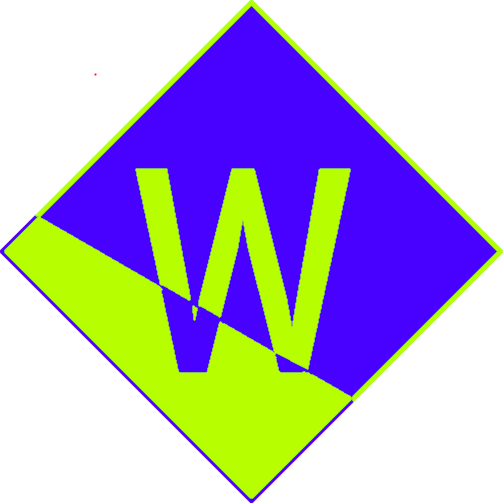
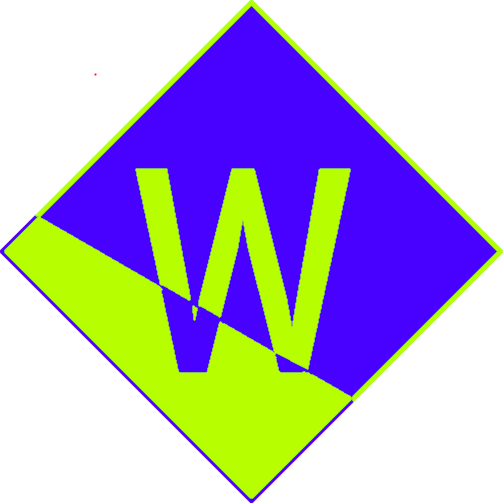
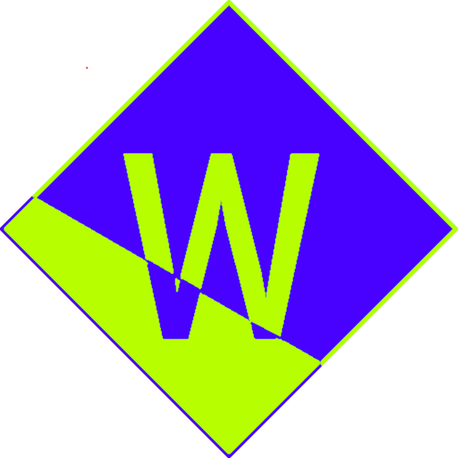

Pay attention to the logos! All of my accounts have one of these logos, if they don't, it's not mine:


 




Hi 👋!
I'm Wernasho, a passionate young programmer
Even at my short age, I love to develop lots of things
As of now, I've deveoloped...
- CLI apps (Majority of projects)
- Web Apps(None of this is public)
... Yet I'm starting to get interested in Desktop Appp Development.
Right now, I mostly develop with Python, though it isn't the only language I know.
More information about my full stack and path in programming
Here.